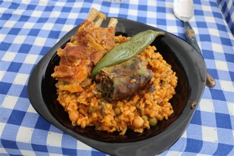
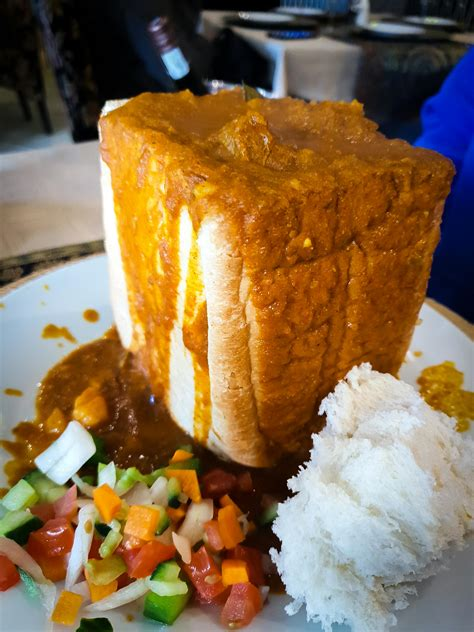
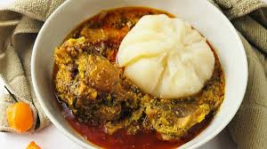

Jollof rice is a traditional dish in Africa. It consists of rice, vegetables, and sometimes some type of meat. It has been a recipe for many centuries.
Bunny chow is a traditional dish in Africa. It consists of a loaf of white bread, hollow out the middle and fill it with a curry, either vegetarian beans or some type of meat. People started making bunny chow in the 1940s.
Fufu is a traditional African dish. It is made up of boiled cassava root and plantains.People started making fufu in the 16th and 17th century.
